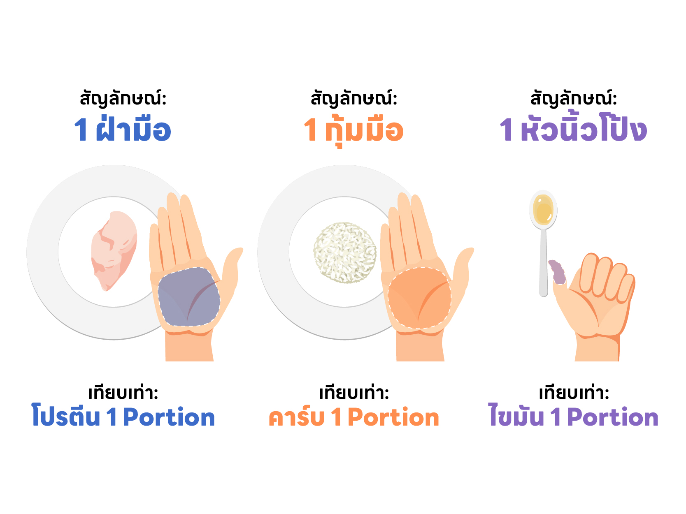
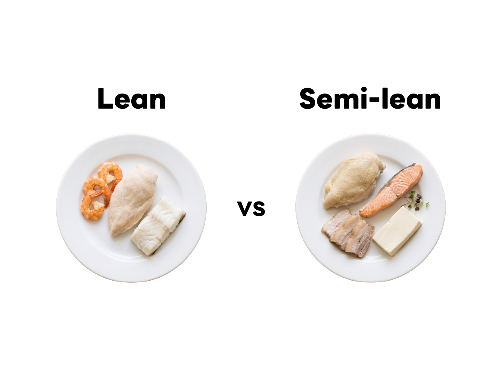

บันทึกมื้ออาหาร · ติดตามโภชนาการ · ทำงานร่วมกับโค้ช
การบันทึกอาหารทุกมื้อช่วยให้เห็น ว่ากินอะไรไปจริงๆ ไม่ใช่แค่เดา ข้อมูลนี้ทำให้โค้ชช่วยได้ตรงจุด และตัวเองก็รู้ว่าต้องปรับอะไรในมื้อถัดไป
ทุกวันมีวงจรง่ายๆ ที่ทำซ้ำกัน คือ Log → เห็นสรุปทันที → ปรับมื้อถัดไป แล้วก็วนซ้ำทุกมื้อ
ในทางปฏิบัติ วันหนึ่งดูแบบนี้:
แอปมี 3 โหมด เลือกตามสถานการณ์ ไม่ต้องใช้ทุกโหมดทุกมื้อ


ทันทีหลัง Log ระบบจะแสดง สรุปโภชนาการ ของมื้อนั้น และอัปเดต ยอดรวมประจำวัน โดยอัตโนมัติ
เปิดแท็บ Dashboard — มี 2 ส่วนหลัก ดูย้อนหลัง 7 วัน (จันทร์–อาทิตย์)
แท็บ แผน ใช้สำหรับ กำหนดมื้ออาหารก่อนกินจริง เหมาะสำหรับวันที่รู้แล้วว่าจะกินอะไร หรืออยากเช็คกับโค้ชก่อน